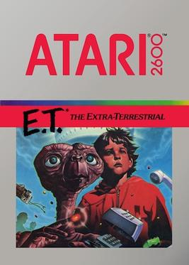
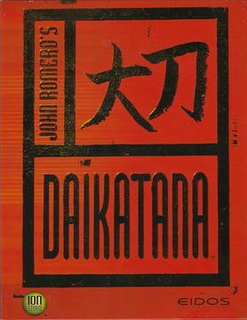
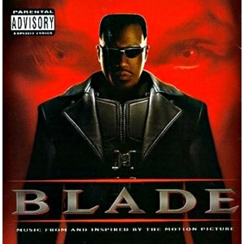

Menos jugados
En este apartado podrás encontrar los 5 juegos menos virales, aquellos que sus creadores pensaron que serían un éxito en el mercado y terminaron siendo todo lo contrario, llegando incluso a llevar a la ruina a algunos desarrolladores. Incluso el reconocimiento crítico y del público no puede garantizar el éxito de un videojuego.
Empezamos con este listado, ¡disfrútalo!
| Imagen | Nombre del juego | Nombre del diseñador | Año de lanzamiento | Desarrollador (Empresa) | Un poco de historia |
|---|---|---|---|---|---|
|  | E.T. The Extra-Terrestrial | Howard Scott Warshaw | 1982 | Atari, Inc | Es un juego basado en la conocida película de Spielberg. Comúnmente considerado como uno de los peores de la historia debido a su corto tiempo de desarrollo. |
 |
Ultima IX Ascension | Richard Garriott | 1999 | Origin Systems | El último título de una serie popular, pero plagado de problemas de desarrollo y una historia inconsistente. |
|  | Daikatana | John Romero | 2000 | Ion Storm | Originalmente planeado para completarse en seis meses, terminó tardando más de dos años con numerosos fallos técnicos. |
|  | Blade: The Edge of Darkness | Raoul Barnett y Hiroyuki Sekimoto | 2000 | Rebel Act Studios | Adelantado a su época técnicamente, pero no tuvo éxito comercial. |
 |
Grim Fandango | Tim Schafer y Bret Mogilefsky | 1998 | LucasArts | Aunque bien recibido por la crítica, no tuvo éxito comercial significativo. |
Aunque hay una lista extensa de juegos sin tanto éxito, aquí se presentan solo 5 para mantenerlo breve e interesante.